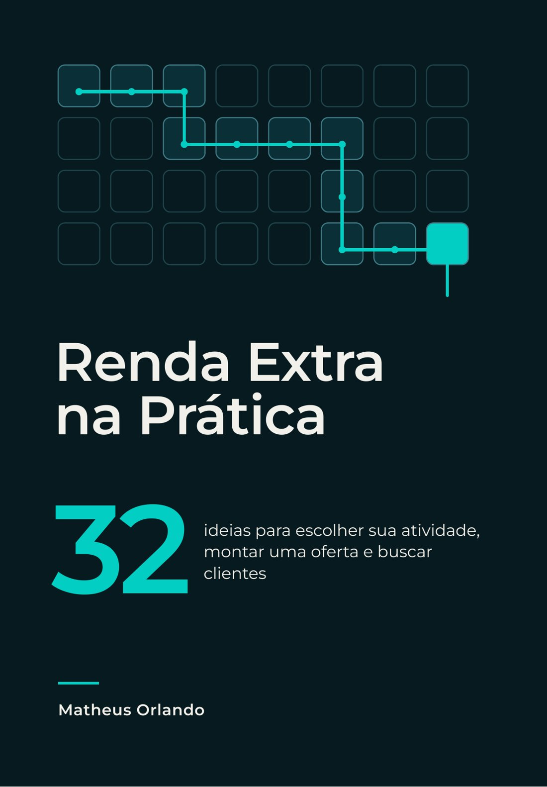

Estratégia antes da próxima ação
Clareza para a marca.
Direção para o negócio.
Ajudo empresários a organizar o marketing, comunicar o valor do negócio e conectar marca, comunicação e comercial.
- Posicionamento
- Proposta de valor
- Marketing & comercial
- Planejamento
Sua empresa evoluiu. A comunicação acompanhou?
O negócio entrega bem, mas o cliente não entende a diferença. As ações se acumulam, mas falta prioridade. Marketing e vendas trabalham, mas não compartilham o próximo passo.
É nesse cenário que atuo. Primeiro, entender o que precisa mudar. Depois, transformar o diagnóstico em escolhas de público, mensagem, recursos e execução — com atenção especial a empresas de serviços B2B.
Quanto tempo a sua decisão pede?
Aprender com uma decisão real na mesa: uma palestra para provocar, workshops para construir um instrumento e consultoria para aplicar na sua empresa. Cada barra mostra a duração do formato.
- Posicionamento e proposta de valorWorkshop de 4 horas. Por que o cliente escolheria sua empresa?
- Marketing e comercial integradosTreinamento com workshop de 4 horas. Do primeiro contato à próxima decisão.
- Plano de marketing 2027Workshop de 4 horas. Prioridades, orçamento e execução para uma equipe pequena.
- Sua empresa entrega valor. Sua marca consegue mostrar?Palestra participativa de 1 hora. Uma conversa prática sobre promessa, prova e experiência.
- Diagnóstico e plano de marketingConsultoria empresarial de 12 horas. Direção de marca e marketing para um negócio real.
Contexto. Escolha. Aplicação. Revisão.
O método combina conceitos, exercícios e critérios de decisão. Cada formato tem um resultado compatível com o tempo disponível.
Partir de uma situação concreta
Uma oferta, uma mensagem, um processo ou uma prioridade do negócio.
Construir um instrumento útil
Mapa de posicionamento, funil com critérios ou plano de 90 dias.
Definir o próximo teste
Responsável, prazo e um sinal observável para revisar a decisão.


Registros reais de aulas e apresentações conduzidas por Matheus.

Renda Extra na Prática
Um caminho educativo para escolher uma atividade, montar uma oferta e testar com pessoas reais.
O e-book reúne 32 ideias em quatro campos, 12 ferramentas, uma planilha de cálculo e um plano de teste de 14 dias. O treinamento em vídeo está em preparação.
Conteúdo educativo. Sem promessa de renda ou resultado garantido.
Decisões que Marcam.
Um podcast sobre negócios, liderança, empreendedorismo e as escolhas que transformam trajetórias.
Qual decisão precisa
ficar mais clara?
Conte o contexto, o público e o desafio. A proposta parte dessa conversa.